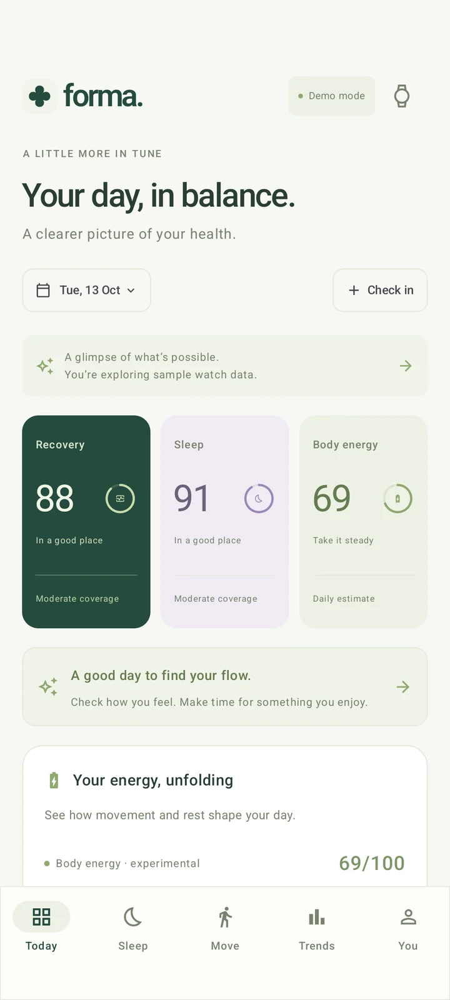
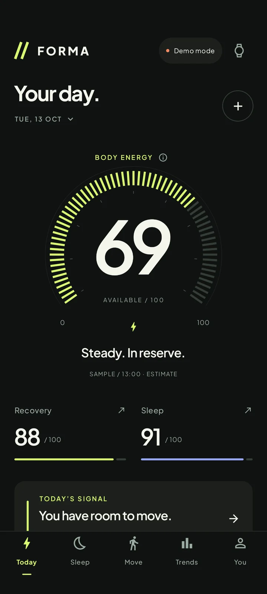

Light, soft and calm
A headline, a sample-data notice and three score cards. The first activity number is below the fold.

Dark, with one big estimate
Body energy fills the top half as a gauge. It is the roughest of the three estimates.

Measured activity first
Steps, calories and exercise against targets, then the three estimates as small cards, then heart rate.